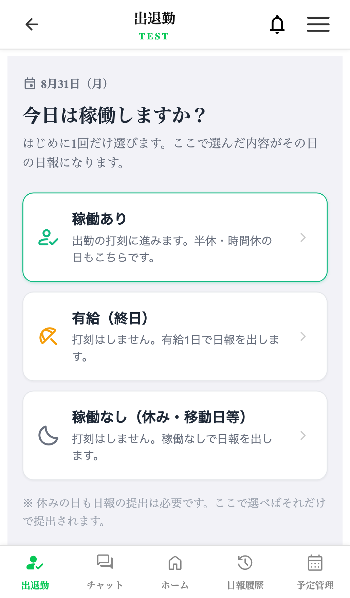
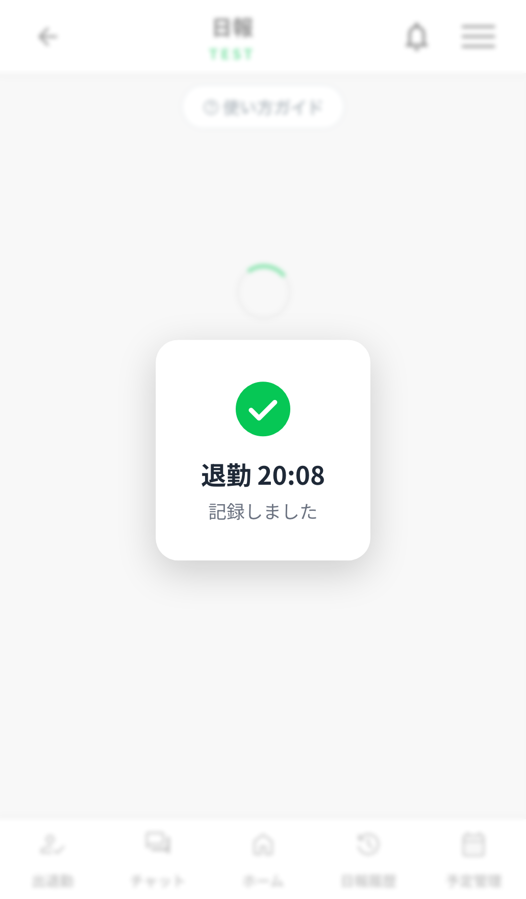
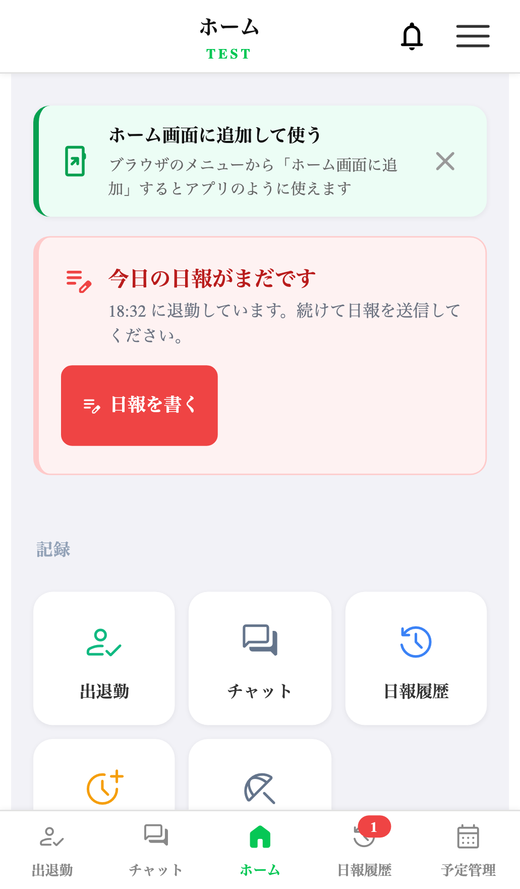
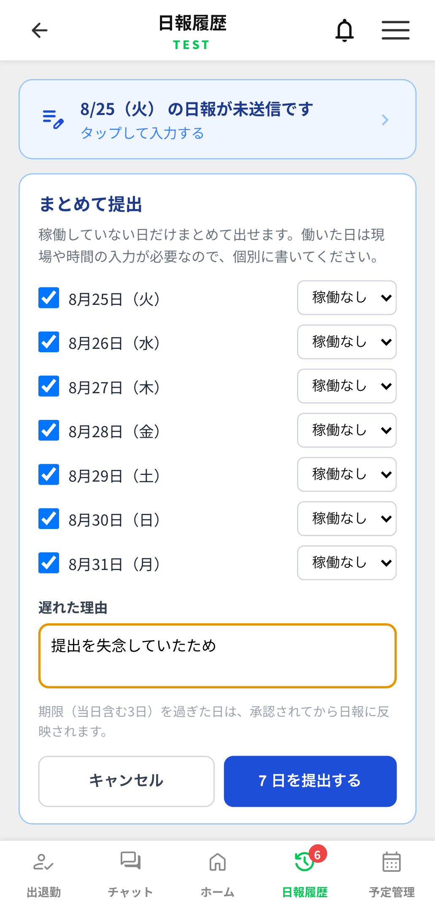

出退勤と日報のフロー統合 ― 実装完了のご報告
2026-08-31 ／ 対象: 作業員アプリ（シード28名・ヒロ木工6名）／ データベースの変更なし
ご相談いただいた「出退勤の打刻を徹底させるため、日報送信を出退勤に取り込む」を実装しました。
本日の夜に一度本番へ出しましたが、下記の理由で当日中に元へ戻しています。
あらためて9月1日（火）の朝に反映したいので、ご確認をお願いします。
実装したもの
| 項目 | 内容 |
|---|
| 朝の稼働有無 |
出退勤を開くと最初に「今日は稼働しますか？」（稼働あり／有給／稼働なし）。
休み・有給はその場で日報が提出され、打刻フォームには進みません。
これで「休みの日に出退勤を触らせる」「稼働の有無を打刻前と日報で二度聞く」が解消します。 |
| 退勤 → 日報 |
退勤を押すと完了画面を挟まず日報の入力画面へ直行。記録できたことは日報画面の中央に1.6秒表示。
完了画面を挟むとそこで離脱する人が出るため画面ごと廃止しました。 |
| 日報の入口 |
メニューの「日報登録」を「日報履歴」に置換。出し忘れ・修正は履歴から入ります。 |
| 出し忘れ対策 |
退勤したのに日報が無い人に3段階で通知（当日はホームの警告＋バッジ、翌日以降は起動時の案内）。
画面をロックはしません（「そこまで厳しくできない」というご方針に沿っています）。 |
| まとめて提出 |
溜まった未提出を理由1回でまとめて提出可能（稼働なし・有給の日のみ）。
期限切れの日は従来どおり承認待ちに積まれます。 |
| 画面のガタつき |
読み込み後に画面が動いて別のボタンを押してしまう問題を解消（実測366px→0）。全画面に効きます。 |

① 朝いちばん／休み・有給はここで完了

② 退勤の直後／完了画面を挟まず日報へ

③ 出し忘れ／退勤したのに日報が無いとき

④ 溜まった分／理由1回でまとめて
本日いったん戻した理由（実データ）
本番の利用実態を調べたところ、日報は定着している一方、打刻はほとんど使われていませんでした。
| シード | ヒロ木工 |
|---|
| 有効な作業員 | 28名 | 6名 |
| 日報を出した人（30日） | 26名 / 743件 | 5名 / 136件 |
| 打刻をした人（30日） | 3名 / 18件 | 0名 / 0件 |
この状態で夜間に切り替えると、今まさに日報を出そうとしている方が
「日報登録」を見失うため、当日中に元へ戻しました。
周知したうえで朝から切り替えるのが安全と判断しています。
この変更は「打刻を必須にする」ことが前提です。
現在は31名中3名しか打刻していないため、切り替え当初は
ほぼ全員にとって新しい操作になります。周知と、最初の数日のフォローが要ります。
なお日報の入口自体は無くなりません。メニューの「日報履歴」を開けば
未提出の日が一番上に出て、そこから入力できます。
ご確認いただきたいこと
1
9月1日（火）の朝イチで反映してよろしいでしょうか。
反映後は全員のアプリが自動で新しい画面になります（作業員側の操作は不要）。
画面が古いままの方は、アプリを一度完全に閉じて開き直していただきます。
2
打刻時の「確認事項」を登録しますか。
現在シード・ヒロ木工とも0件です。0件でも打刻はできますが、
「ヘルメット・安全帯を着用していますか」等を登録すると、打刻のたびにチェックさせて
同意した文面を証跡として保存できます。管理画面から登録できます。
3
溜まっている未提出の日報をどう扱いますか。
窪薗さん7日・大塚（啓）さん6日・柴垣さん6日 ほか、合計で数十日分あります。
新機能の「まとめて提出」で片付けられますが、提出期限（当日含む3日）を過ぎた分は承認待ちに入るため、
承認の手間が発生します。放置しても業務は止まりません。
安全面
- データベースの変更はありません。既存のデータはそのままで、問題があれば元に戻すだけで復旧します（本日の巻き戻しも約10分で完了しました）
- 人件費の計算は変わりません。従来どおり日報の作業時刻が基準で、打刻の実時刻は表示専用です
- 日報の中身・提出ルール（週7、当日含む3日の提出期限、期限切れの承認）は変えていません
- 管理画面の機能は変わりません。打刻が増えるぶん「出勤打刻なし」パネルが実用的になります
- 自動テスト300件すべて成功。第三者AIによるコードレビューも実施済み
作業員向けの案内資料を別途ご用意しました。そのままグループLINEに添付してお使いいただけます。
（「9月1日から 出退勤と日報のやり方が変わります」A4 1枚）